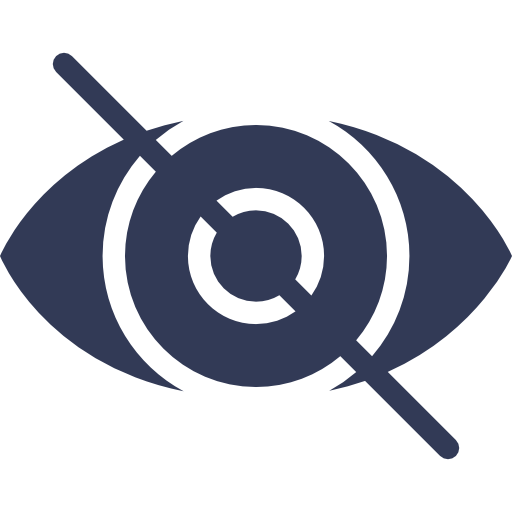

Accesibilidad
-
¿Qué es?
La accesibilidad en términos informáticos consiste en la facilidad que tiene un usuario cualquiera de navegar por nuestra página web. Cuando hablamos de cualquier usuario, debemos hacer foco sobre todo en aquellas personas que puedan tener mayores dificultades o discapacidades, pues no es lo mismo, desde luego, una discapacidad temporal de una fractura de un brazo, a una discapacidad. En el siguiente apartado se explicará brevemente donde podemos encontrar una mala accesibilidad y cómo podemos evitarlo. que no es temporal como pérdida de audición.
-
Conceptos básicos de accesibilidad. POUR.
Para entender de una forma más métodica, qué es la accesibilidad, tratamos con las Pautas de accesibilidad a contenido web (WCAG). Estas pautas constan de cuatro principios básicos, llamados con la palabra POUR:
Perceivable (Perceptible): el contenido debe ser percibido por todos los usuarios.
Operable (Manejable): nuestra página se debe ser navegable por todos los usuarios.
Understandable (Comprensible): el contenido se debe entender, así como la interfaz para poder ser usada sin confusiones.
Robust (Sólido): una página que pueda ser consumida por una gran variedad de navegadores.
-
Diversidad de usuarios
A la hora de realizar una aplicacion web debemos tener en cuenta que nuestra página llegará a una gran variedad de usuarios. Estos usuarios, pueden tener ciertas discapacidades, provocando que no puedan consumir el contenido de la página igual que otras personas. Las discapacidades que un usuario pueda tener se dividen prncipalmente en cuatro diferenciados grupos:
visual, motriz, auditiva y cognitiva.


Visual
La discapacidad visual puede variar según la pérdida de visión que tengas. Existe gente con mayor, menor visión o ningún tipo de visión. Se usan alternativas como lector de pantalla, braille, lupa de pantalla. etc.
Motriz
Aquellas personas con dificultades físicas. Estos usuarios usan teclado, control de voz, dispositivo de interrupción o uno de rastreo ocular para interactuar con el ordenador. Al igual que las discapacidades visuales éstas pueden ser temporales o circunstanciales.
Auditiva
Varían entre usuarios totalmente sordos o con dificultades auditivas. Para este caso, existen ayudas como audífonos, subtítulos en los vídeos o transiciones.
Cognitiva
Dentro de la gran variedad de afecciones cognitivas podemos encontrar trastornos de déficit de atención o autismo. Los diseños mínimos pueden ayudar a estas personas a concentrarse en la lectura del contenido y a su vez, ayudan a la carga cognitiva.
Es muy importante contar con una página accesible, en caso adverso, estariamos excluyendo a ciertos usuarios con dichas dificultades de muchos productos.
Áreas tematicas principales para la creación de una página accesible
-
Foco
Importante para aquellos que tienen dificultades motrices, problemas de tecnología o preferencia por uso de teclado. Se trata de crear cosas que puedan ser manejadas con teclado y no con mouse. Una estrategia de foco bien implementada, brindara una mejor experiencia tanto a gente con discapacitades como a gente que simplemente naveguen de forma más rápida y eficaz con el teclado.
Puedes controlar el foco mediante las teclas Tab, Shift+Tab o las teclas de dirección
Ejemplo con formulario
Ejemplo con imagenes
Bote en un lago azul Paisaje con tormenta Nubes al anochecer Ejemplo con Vídeo
-
Semántica
Estructura semántica
En este apartado, trataremos el termino de Tecnología asistencial, pues son herramientas muy útiles a la hora de consumir una página, ayudando a cualquier persona con discapacidad. Pueden tratarse de lectores de pantalla, zoom en el navegador o cosas más específicas como controladores para una tarea determinada.
Puede ser, tanto un dispositivo físico como un software, así como estar incorporado a un sistema operativo o simplemente tratarse de una extensión de un navegador.
Para poder implementar bien estas tecnologías, es necesario que nuestra página tenga una semántica accesible que pueda permitir a los usuarios tener una experiencia positiva y sacar partido a estas herramientas.
Semántica y ARIA
La estructura semántica es trabajo de como estructuremos nuestra página mediante el lenguaje HTML. Ahora veremos como expresar cada contenido, esta tarea ya no depende de la semántica que HTML nos ofrece. Para ello, existe WAI-ARIA (Accessible Rich Internet Applications Suite), que nos ofrece especificaciones para mejorar la accesibilidad.
WAI-ARIA nos ofrece distintos atributos con los que podremos dar roles a las etiquetas HTML. Cabe destacar que existen elementos HTML a los que no se le pueden indicar roles.
<li tabindex="0" class="checkbox" role="checkbox" aria-checked="true" checked> Receive promotional offers <li>
Con WAI-ARIA, podrás:
-
Añadir texto descriptivo a ciertos elementos.
Empleamos aria-label cuando existe en
algún elemento una
indicación visual y es importante aclarar la función de ésta.
aria-label="screen reader only label"
-
Poner función de región HTML a una
etiqueta.
role="scrollbar" aria-controls="main"
-
Indicar a la tecnología asistencial cuando una
información puede
cambiar.
aria-live="true"
-
Añadir texto descriptivo a ciertos elementos.
Empleamos aria-label cuando existe en
algún elemento una
indicación visual y es importante aclarar la función de ésta.
-
Estilos
Hacer que los elementos visuales de nuestro diseño sea lo más útil posible.
Herramientas para facilitar el acceso a nuestra página
Lectores de pantalla
Extensiones/plugins
Sreen Reader. Extensión del navegador Chrome.
Lector de pantalla para Chrome. Útil y fácil de usar. Construido solamente a partir de Javascript y HTML.
Accesibility Developer Tools. Extensión/plugin de Chrome.
(Deprecado) Lector de pantalla para Chrome. Este plugin será eliminado en un futuro, pero es sustituido por las auditorías de accesibilidad integradas en el panel Lighthouse Audits en Chrome DevTools.
Online
Sidar. Herramienta Online.
Se trata de una aplicacion web en la que simplemente debes introducir la URL de tu página. Posteriormente, te dará información acerca de la accesibilidad de tu página.
Hera. Herramienta Online.
Hera es una utilidad que realiza un análisis automático previo de la accesibilidad de tu página e informa de los errores (si hay), de cómo solventarlos y de qué puntos deben ser revisados.
Local
HTMLCodeSniffer. Herramienta local.
Esta herramienta verifica el código de tu página mediante los estándares WCAG. Construido mediante Javascript.
Accesibilidad de esta página
Captura con la herramienta del navegador
A continuación, se muestra una captura de la accesibilidad de esta página mediante la interfaz de chrome Lighthouse: